CHEMICAL BONDING
-
Chemical Bond :
In the process each atom attains a stable outer electronic configuration of inert gases.
-
Ionic or Electrovalent Bond :
The formation of an ionic compound would primarily depends upon :
The ease of formation of the positive and negative ions fromthe respective neutral atoms.
The arrangement of the positive and negative ions in the solid, that is the lattice of the crystalline compound.
-
Conditions for the formation of ionic compounds :
Electronegativity difference between two combining elements must be larger.
Ionization enthalpy (M(g)->M+(g) + e) of electropositive elementmust be low.
Negative value of electron gain enthalpy (X (g) + e -> X(g)) of electronegative element should be high.
Lattice enthalpy (M+(g) + X (g)->MX (s)) of an ionic solid must be high.
-
Lattice Enthalpy :
The lattice enthalpy of an ionic solid is defined as the energy required to completely separate one mole of a
solid ionic compound into gaseous constituent ions.
-
Factors affecting lattice energy of an ionic compound :

-
Determination of lattice energy :
Born-Haber Cycle :
It inter relates the various energy terms involved during formation of an ionic compound.
It a thermochemical cycle based on the Hesss law of constant heat summation.
-
Hydration :
All the simple salts dissolve in water, producing ions, and consequently the solution conduct electricity. Since Li+ is very small, it is heavily hydrated. This makes radius of hydrated Li+ ion large and hence it moves only slowly. In contrast, Cs+ is the least hydrated because of its bigger size and thus the radius of the Cs+ ion is smaller than the radius of hydrated Li+, and hence hydrated Cs+ moves faster, and conducts electricity more readily.
-
Hydrolysis :
Hydrolysis means reaction with water molecules ultimately leading to breaking of O-H bond into H+ and OH- ions.
Hydrolysis in covalent compounds takes place generally by two mechanisms
By Coordinate bond formation : Generally in halides of atoms having vacant d-orbitals or of halides of atoms having vacant orbitals.
By H-bond formation : For example in Nitrogen trihalides
-
General properties of ionic compounds :
(a) Physical state : At room temperature ionic compounds exist either in solid state or in solution phase but not in gaseous state.
(b) Simple ionic compounds do not show isomerism but isomorphism is their important characteristic.

(c) Electrical conductivity :
All ionic solids are good conductors in molten state as well as in their aqueous solutions because their ions are free tomove.
(d) Solubility of ionic compounds :
Soluble in polar solvents like water which have high dielectric constant
-
Covalent character in ionic compounds (Fajans rule) :
Fajans pointed out that greater is the polarization of anion in a molecule, more is covalent character in it.

More distortion of anion, more will be polarisation then covalent character increases.
Fajans gives some rules which govern the covalent character in the ionic compounds, which are as follows:
(i) Size of cation : Size of cation α 1 / polarisation.
(ii) Size of anion : Size of anion α polarisation
(iii) Charge on cation : Charge on cation α polarisation.
(iv) Charge on anion : Charge on anion α polarisation.
(v) Pseudo inert gas configuration of cation :
-
Covalent Bond :
It forms by sharing of valence electrons between atoms to form molecules e.g., formation of Cl2 molecule :

The important conditions being that :
Each bond Is formed as a result of sharing of an electron pair between the atoms.
Each combining atom contributes at least one electron to the shared pair.
The combining atoms attain the outer- shell noble gas configurations as a result of the sharing of electrons.
-
Coordinate Bond (Dative Bond):
The bond formed between two atom in which contribution of an electron pair is made by one of them while the sharing is done by both.

-
FormalCharge :

Formal charges help in the selection of the lowest energy structure from a number of possible Lewis structures for a given species.
-
Limitations of the Octet Rule :
The incomplete octet of the central atom
LiCl, BeH2 and BCl3, AlCl3 and BF3.
Odd-electron molecules
nitric oxide, NO and nitrogen dioxide. NO2

-
The expanded octet

-
Other drawbacks of the octet theory
some noble gases (for example xenon and krypton) also combine with oxygen and fluorine to form a number of compounds like XeF2 , KrF2 , XeOF2 etc.,
This theory does not account for the shape of molecules.
It does not explain the relative stability of the molecules being totally silent about the energy of a molecule.
-
Valence bond theory (VBT) :
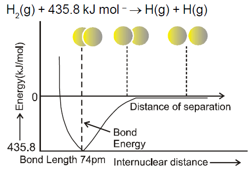Orbital Overlap Concept
according to orbital overlap concept, the formation of a covalent bond between two atoms results by pairing of electrons present, in the valence shell having opposite spins.
-
Types of Overlapping and Nature of Covalent Bonds
The covalent bond may be classified into two types depending upon the types of overlapping :
(i) sigma( σ. ) bond, and (ii) pi (𝞹) bond
Sigma ( σ) bond : This type of covalent bond is formed by the end to end (head-on) overlap of bonding orbitals along the internuclear axis.
s-s overlapping
s-p overlapping:
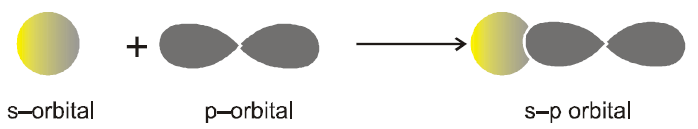p-p overlapping : This type of overlap takes place between half filled p-orbitals of the two approaching atoms.
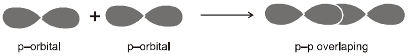pi(𝞹) bond : In the formation of bond the atomic orbitals overlap in such a way that their axes remain parallel to each other and perpendicular to the internuclear axis.
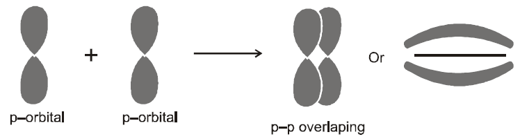Strength of Sigma and pi Bonds :
In case of sigma bond, the overlapping of orbitals takes place to a larger extent. Hence, it is stronger as compared to the pi bond where the extent of overlapping occurs to a smaller extent.
-
Valence shell electron pair repulsion (VSEPR) theory :
The main postulates of VSEPR theory are as follows:
(i) The shape of amolecule depends upon the number of valence shell electron pairs [bonded or nonbonded) around the central atom.
(ii) Pairs of electrons in the valence shell repel one another since their electron clouds are negatively charged.
(iii) These pairs of electrons tend to occupy such positions in space that minimise repulsion and thus maximise distance between them.
(iv) The valence shell is taken as a sphere with the electron pairs localising on the spherical surface atmaximum distance from one another.
(v) A multiple bond is treated as if it is a single electron pair and the two or three electron pairs of a multiple bond are treated as a single super pair.
(vi) Where two or more resonance structures can represent a molecule, the VSEPR model is applicable to any such structure.
-
The repulsive interaction of electron pairs decreases in the order :
lone pair (lp) - lone pair (lp) > lone pair (lp) - bond pair (bp) > bond pair (bp) -bond pair (bp)
-
Hybridisation :
Salient features of hybridisation :
1. The number of hybrid orbitals is equal to the number of the atomic orbitals that get hybridised.
2. The hybridised orbitals are always equivalent in energy and shape.
3. The hybrid orbitals are more effective in forming stable bonds than the pure atomic orbitals.
4. These hybrid orbitals are directed in space in some preferred direction to have minimum repulsion between electron pairs and thus a stable arrangement is obtained. Therefore, the type of hybridisation indicates the geometry of the molecules.
-
Important conditions for hybridisation :
(i) The orbitals present in the valence shell of the atom are hybridised.
(ii) The orbitals undergoing hybridisation should have almost equal energy.
(iii) Promotion of electron is not essential condition prior to hybridisation.
(iv) It is the orbital that undergo hybridization and not the electrons.
-
Determination of hybridisation of an atom in a molecule or ion:
Steric number rule (given by Gillespie) :
Steric No. of an atom = number of atom bonded with that atom + number of lone pair(s) left on that atom.

-
Hybridization Involving d-orbital :
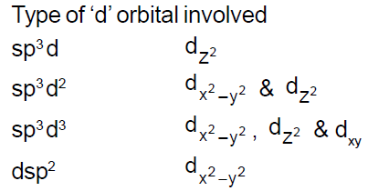 -
Molecular Orbital Theory (MOT) :
developed by F. Hund and R.S. Mulliken in 1932.
(i) Molecular orbitals are formed by the combination of atomic orbitals of comparable energies and proper symmetry.
(ii) An electron in an atomic orbital is influenced by one nucleus, while in a molecular orbital it is influenced by two ormore nuclei depending upon the number of the atoms in the molecule.Thus an atomic orbital is monocentric while a molecular orbital is polycentric.
(iii) The number ofmolecular orbitals formed is equal to the number of combining atomic orbitals.When two atomic orbitals combine, twomolecular orbitals calledbondingmolecular orbitalandanti-bondingmolecular orbitalare formed.
(iv) Themolecular orbitals like the atomic orbitals are filled in accordance with theAufbau principleobeying thePauli Exclusion principleand theHunds Rule of Maximum Multiplicity.But the filling order of these molecular orbitals is alwaysexperimentally decided,there is no rule like (n + l) rule in case of atomic orbitals.
-
Conditions for the combination of atomic orbitals :
1. The combining atomic orbitals must have the same or nearly the same energy.
2. The combining atomic orbitals must have the same symmetry about the molecular axis.
3. The combining atomic orbitals must overlap to the maximum extent.
-
Energy level diagram for molecular orbitals :
The increasing order of energies of variousmolecular orbitals forO2 and F2 is given below :
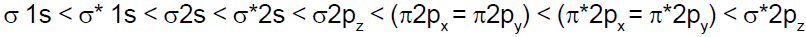The important characteristic feature of this order is that theenergy of σ2pzmolecular orbital is higher than that of 𝞹2pxand 𝞹2pymolecular orbitals.
-
Bond Order
Bond order (b.o.) = ½ (Nb Na)
A positive bond order (i.e., N
b > Na) means a stable molecule while a negative (i.e., Nb < Na) or zero (i.e., Nb = Na) bond ordermeans an unstable molecule. -
Nature of the Bond :
Integral bond order values of 1, 2 or 3 correspond to single, double or triple bonds respectively.
-
Bond-Length :
The bond order between two atoms in a molecule may be taken as an approximatemeasure of the bond length. The bond length decreases as bond order increases.
-
Magnetic Nature :
If all themolecular orbitals in amolecule are doublyoccupied, the substance is diamagnetic (repelled bymagnetic field) e.g., N2 molecule.
-
Dipole moment :
Dipolemoment (µ) = Magnitude of charge (q) × distance of separation (d) Dipole moment is usually expressed in Debye units (D). The conversion factors are
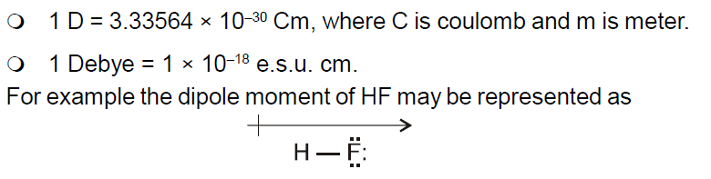The shift in electron density is represented by crossed arrow (---------> ) above the Lewis structure to indicate the direction of the shift.
amoleculewill have a dipolemoment if the summation of all of the individual moment vector is non-zero.
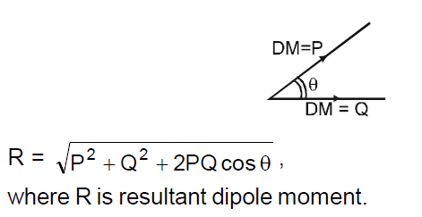 -
Resonance :
Definition : Resonance may be defined as the phenomenon in which two or more structures involving in identical position of atom, can be written for a particular compound.
For example, the ozone, O3 molecule can be equally represented by the structures I and II shown below :
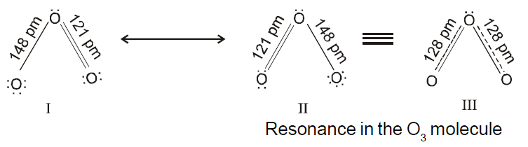Resonance Hybrid : It is the actual structure of all different possible structures that can be written for the molecule without violating the rules ofmaximum covalance for the atoms.
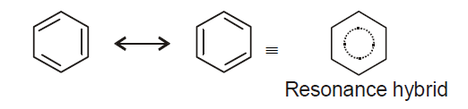 -
Hydrogen Bond :
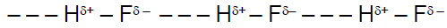Conditions required for H-bond :
(i) Molecule should have more electronegative atom (F, O, N) linked to H-atom.
(ii) Size of electronegative atom should be smaller.
Alone pair should be present on electronegative atom.
Order of H-bond strength
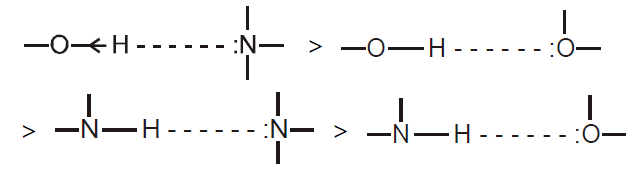 -
TYPES OF H-BONDS :
(A) Intramolecular H-Bonding :
it is formed when hydrogen atom is present in between the two highly electronegative (F, O, N) atoms within the same molecule.
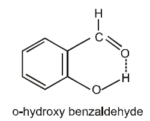It has lower boiling point (i.e. more volatile) than its para-derivative
Necessary conditions for the formation of intramolecular hydrogen-bonding:
(a) the ring formed as a result of hydrogen bonding should be planar.
(b) a 5- or 6- membered ring should be formed.
(c) interacting atoms should be placed in such away that there isminimum strain during the ring closure.
(B) Intermolecular H-Bonding :
it is formed between two different molecules of the same or different compounds
(a) In water molecules
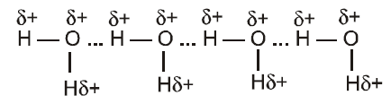(b) The hydrogen bonds in HF link the F atom of one molecule with the H-atom of another molecule, thus forming a zig-zag chain (HF)n in both the solid and also in the liquid.
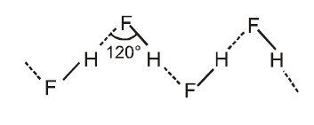 -
Intermolecular forces (VanderWaals Forces) :
Intermolecular attractions hold two ormoremolecules together. These are weakest chemical forces and can be of following types.
(a) Ion-dipole attraction
(b) Dipole-dipole attraction
(c) Ion-induced dipole attraction
(d) Dipole-induced dipole attraction
(e) Instantaneous dipole- Instantaneous induced dipole attraction : (Dispersion force or London forces)
Strength of vander waal force ∝molecularmass.
van derWaals force ∝ boiling point.
-
Metallic bond :
Twomodels are considered to explain metallic bonding:
(A) Electron-sea model
(B) Band model
-
Some special bonding situations :
(a) Electron deficient bonding: There are many compounds in which some electron deficient bonds are present apart from normal covalent bonds or coordinate bonds. These electron deficient bonds have less number of electrons than the expected such as three centre-two electron bonds (3c-2e) present in diborane B2H6, Al2(CH3)6, BeH2(s) and bridging metal carbonyls.
(b) Back Bonding : Back bonding generally takes place when out of two bonded atoms one of the atom has vacant orbitals (generally this atom is from second or third period) and the other bonded atom is having some non-bonded electron pair(generally this atom is from the second period). Back bonding increases the bond strength and decreases the bond length. For example, in BF3
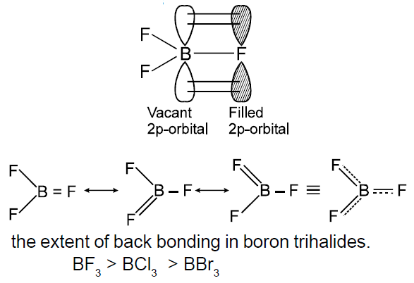